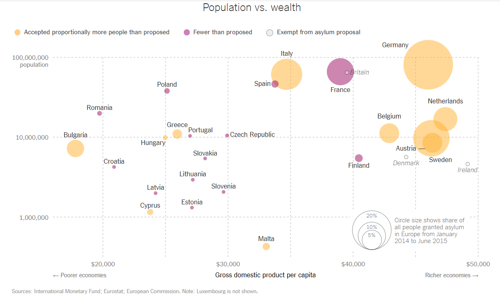
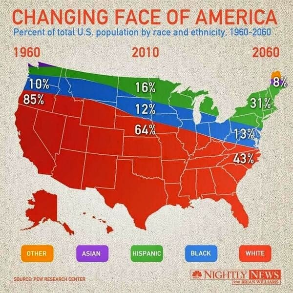

The Good, the Bad, and the Data-y
The Good

An example of a good data visualization is The New York Times represenation of the refugee crises in their 2015 article “Seeking a Fair Distribution of Migrants in Europe.” Using Cairo’s guidelines, the inforgraphic fits most of the criterea quite well. First, the atricle is truthful. The refugee crises is a very controversial topic as many people throughout the political spectrum seek to use the situation to futher their political agenda. In this article however, the NYT refraims from adding bias and allow the readers to see the data plainly and draw their own conclusions about the refugee crises. Addtionally, the chart is functional. After quickly glancing at the axis titles and reading the legend to understand what the bubbles mean, viwers quicly understand what a country’s position on the map means and how that relates to the overall problem of immigration. Each of the methods that the author decides to use feels necessary and does not overcomplicated the data presented. The chart also works to expand my island of knowledge. After a brief glance at the chart, one can quiclky deduce that genreally, larger and more economically prosperous countries like Sweden, Germany, and Italy account for the majority of refugees taken in. While succesfully expanding my knowledge of the subject (my island of knowledge), the inforgraphic also left me with more questions (the shoreline of wonder) , like “Why Bulgaria, a country very unlike the other major refugee havens, takes in so many refugees?” and “Why France, a country that mimic many others of these countries, takes the least amount of immigrants?” Questions like these, inspired by the information obtained in the inforgraphic, help viewers direct their curiousity in a productive manner and dig deeper into the meaning of the data that is portrayed.
The Bad

Above is an exmape a map of the as published by NBC in 2014. Though it does appear to be a weather map at first, the map actualy portrays the U.S.’s racial demographic breakdown by percentage starting in 1960 and ending 100 years later in 2060. Overall, the map is very confusing and intially misleading to viewers. While I do not doubt the chart’s truthfullness, and it is objectivly appealing to the eye, it fails in that it is not functional. The chart use of a map of the United States despite not having anything to do with geography is very distracting. The use of it as a background for which to display the data does not actually add anything to my understanding and it was only after reading the numbers on the chart did I understand what the author was trying to show me. As Cairo says in his book, “if you need to read all the numbers in a chart to understand it, why do you need a chart in the first place?” Overall, the chart is a misuse of data visualization and does contribute more to my knowledge than if the author just gave me the numbers straight.
The Data-y

To improve this model I would recommend the model shown below of the share’s of China’s GDP by sector. The two graphs are not entirely different from one another exempt that the one below provides a clearer and more succinct view of the data. Readers of the chart below can clearly distuignush the trends in China’s economy without having to find the particular numbers that are involved. If presented in the manner below, the “Changing Face of America” graph would allow viewers to better access and interpret the data that it is trying to display, thus expanding his/her’s overall island of knowledge.